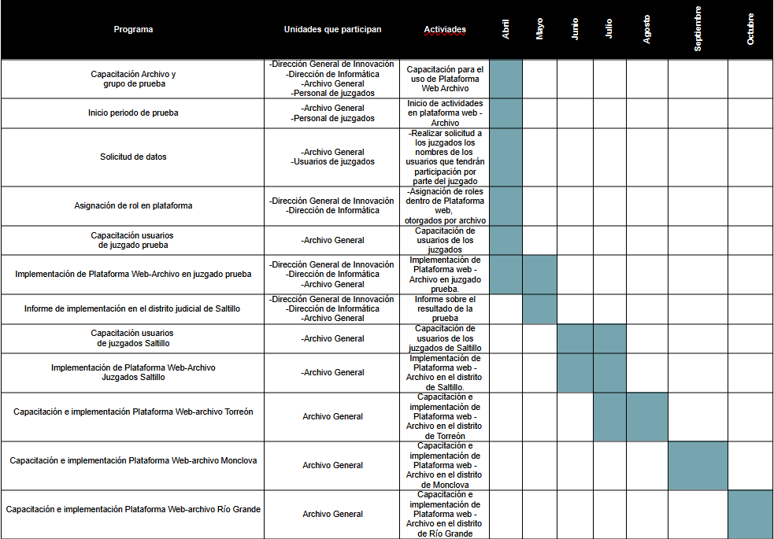

Key: AC20230426
Consejero Presidente: Miguel Felipe Mery Ayup.
Secretaria de Estudio y Cuenta: Erika Nohemí Hernández Dávila.
Resumen. En este acuerdo se aprueba la implementación del Sistema Digital de Gestión de Archivo (SIGDDA), a través de la adición del módulo Archivo en la Plataforma Web. Se describen las funciones que tendrán las personas que operarán el SIGDDA, así como las mejoras que habrá con su operación. Además, en este acuerdo se aprueba la fecha en la que iniciará el periodo de prueba del SIGDDA. Finalmente, se instruye a las autoridades competentes para el debido cumplimiento del acuerdo.
Saltillo, Coahuila de Zaragoza. Acuerdo correspondiente a la sesión del 25 de abril de 2023.
I. CONSIDERACIONES
1. Antecedentes
El Consejo de la Judicatura el 29 de octubre de 2020, emitió el acuerdo C-127/2020, en el que se implementó el Sistema Integral de Búsqueda de Expedientes y Digitalización (en adelante “SIBED”).
El SIBED, es una herramienta que tras su implementación formó parte del sistema digital confiable al que se refiere el artículo 154 de la Constitución Local. El SIBED, se integró al sistema Poder en línea, el cual se conforma a su vez, de otros mecanismos como el Buzón Electrónico de Demandas y Promociones (BEDP), el Sistema de Cita en Línea (SCL) y el Expediente Virtual 2.0 (EV2.0).
El SIBED es una herramienta tecnológica que, permite a los órganos jurisdiccionales y al Archivo Judicial General visualizar, buscar, enviar, recibir, acomodar y consultar digitalmente los datos de los expedientes y documentos administrativos del Poder Judicial del Estado.
El SIBED se implementó con la finalidad de facilitar la búsqueda y consulta de expedientes para las personas usuarias.
Asimismo, el Consejo de la Judicatura, en sesión celebrada el 15 de junio de 2021, emitió el acuerdo C-096/2021 mediante el cual se da seguimiento a la implementación del SIBED.
En este acuerdo el Consejo de la Judicatura, aprobó la propuesta de la segunda etapa de implementación del SIBED, conforme a los términos establecidos y se autorizó ampliar el proceso de digitalización de expedientes de los distritos judiciales de Saltillo y Torreón para abarcar aquellos relativos a los años 2010 y 2014.
El SIBED ha estado en funciones en el Poder Judicial de Estado de Coahuila durante más de 2 años, bajo la modalidad señalada en los respectivos acuerdos del Consejo de la Judicatura.
En la actualidad la Oficialía Mayor a través de la Dirección de Informática y la Dirección de Innovación, cuenta con personal con los conocimientos necesarios y las herramientas adecuadas para desarrollar sistemas informáticos eficientes de calidad, sin que genere un costo adicional por su desarrollo y mantenimiento.
En ese sentido, el Consejo de la Judicatura estima pertinente sustituir el SIBED con la implementación del Sistema de Gestión Digital de Documentos de Archivo (en adelante “SIGDDA”), como un módulo adicional en la Plataforma Web.
El SIGDDA beneficiará al interior en el Poder Judicial, en el manejo de la documentación digital, se podrá contar con inventarios confiables, será posible la reducción del uso de hojas y como es un programa desarrollado por el propio personal de la Oficialía Mayor, no generará un gasto económico a esta institución.
2. Facultades del Consejo de la Judicatura para emitir el presente acuerdo
El Consejo de la Judicatura es el órgano de administración, vigilancia y disciplina del Poder Judicial del Estado de Coahuila de Zaragoza, según lo establece el artículo 143 de la Constitución Política del Estado de Coahuila de Zaragoza.
De acuerdo con el artículo 57, fracciones VIII y XI de la Ley Orgánica del Poder Judicial del Estado de Coahuila de Zaragoza (en adelante “LOPJECZ”), el Consejo tiene las siguientes atribuciones: supervisar el funcionamiento de los órganos que integran este poder público, así como el desempeño de sus servidores públicos y dictar las providencias necesarias para el mejoramiento de la administración de justicia; y expedir los acuerdos que sean necesarios para regular el funcionamiento del Poder Judicial y de sus órganos.
El Archivo Judicial General (en adelante “AJG”) es un órgano administrativo del Poder Judicial del Estado de Coahuila de Zaragoza encargado de la recepción, deposito, resguardo, conservación, orden y clasificación de expedientes y documentos generados por los órganos judiciales y dependencias administrativas del Poder Judicial, así como a proporcionar servicios de consulta a los abogados y público en general que lo requiera1.
Ahora bien, el Consejo de la Judicatura, es un órgano de administración encargado de emitir las providencias necesarias para el adecuado funcionamiento de los órganos que integran el Poder Judicial del Estado de Coahuila de Zaragoza, todo ello encaminado a contribuir con el mejoramiento de la administración de justicia.
El 29 de octubre de 2020 el Consejo de la Judicatura del Estado emitió el acuerdo C-127/2020, mediante el cual aprobó la implementación del SIBED. Y en la sesión celebrada el 15 de julio de 202, mediante el acuerdo C-096/2021 el Consejo da seguimiento a la implementación del SIBED.
En conclusión, el Consejo de la Judicatura tiene las facultades necesarias para aprobar la implementación del Sistema Digital de Gestión de Documentos de Archivo, que tiene como último fin fortalecer el mecanismo eficiente de intercambio documental interno del Poder Judicial del Estado de Coahuila de Zaragoza, el mejoramiento de la administración de justicia y la regulación de sus órganos, principalmente los juzgados y el AJG.
3. Justificación para la implementación Sistema de Gestión Digital de Documentos de Archivo (SIGDDA)
El artículo 154, de la Constitución Política local, prevé como forma de acceso a la justicia de las personas ciudadanas del Estado de Coahuila de Zaragoza, un sistema digital confiable.
En la actualidad el Consejo de la Judicatura del Estado de Coahuila de Zaragoza, a través de las políticas públicas gestionadas por el Consejero Presidente, que están encaminadas a la modernización e innovación en la forma de impartir justicia en este poder público, ha implementado diversas herramientas digitales que han permitido a las personas usuarias tener un acceso sencillo y rápido a los servicios que se ofrecen en el Poder Judicial del Estado de Coahuila de Zaragoza.
El Poder en Línea es parte del sistema digital confiable ya referido, y se conforma por el BEDP, SCL, EV2.0, y el SIBED.
Tales herramientas digitales han permitido que las personas usuarias hagan uso de sistemas informáticos que facilitan el acceso a la justicia. Asimismo, tales herramientas les permiten a estas personas usuarias reducir el tiempo de consulta en el local de los órganos jurisdiccionales.
En cuanto a la información que se controla dentro de los órganos del Poder Judicial del Estado de Coahuila de Zaragoza, la Oficialía Mayor, a través de las Direcciones de Informática e Innovación ha desarrollado la Plataforma Web.
La Plataforma Web es un mecanismo eficiente de información en el interior del Poder Judicial, que facilita las actividades jurisdiccionales, como lo son la publicación oportuna de listas de acuerdo, la publicación de las versiones públicas de sentencias definitivas, la publicación de edictos, y la publicación de los demás documentos jurisdiccionales que se emiten en los órganos jurisdiccionales.
En ese sentido, el Consejo de la Judicatura pone de manifiesto que el SIBED, fue desarrollado por una empresa externa al Poder Judicial del Estado de Coahuila de Zaragoza, por lo tanto su gestión está cargo de un una persona intermediaria, lo que generó y sigue generando un costo adicional para esta institución.
El Consejo de la Judicatura, pone de manifiesto que el Consejero Presidente ha implementado políticas públicas encaminadas a modernizar la forma en la que se imparte justicia, buscando siempre la innovación y mejoramiento de los servicios que se presentan.
Como parte de estas políticas públicas, desde el mes de octubre de 2022, en la Oficialía Mayor, de forma específica en la Dirección de Informática y la Dirección de Innovación, desarrollan un sistema que sustituya al SIBED. Este sistema es el SIGDDA y funcionará con la implementación del módulo de Archivo en la Plataforma Web.
Esto es posible ya que la Dirección de Informática y la Dirección de Innovación de la Oficialía Mayor, hoy en día cuentan con personal debidamente capacitado, que tiene los conocimientos informáticos necesarios para hacer posible el desarrollo de sistemas internos que sean útiles y eficientes, aprovechando al máximo los recursos humanos propios.
Asimismo, en el desarrollo e implementación de este sistema también ha participado personal del AJG, con la finalidad de tener una perspectiva mucho más amplia de los alcances y los procesos al interior de dicho órgano no jurisdiccional.
El Consejo de la Judicatura propone el siguiente cronograma de implementación del SIGDDA:

De esta manera, este Consejo de la Judicatura estima oportuno sustituir al Sistema Integral de Búsqueda de Expedientes y Digitalización (SIBED) implementado mediante acuerdo C-127/2020, por el Sistema de Gestión Digital de Documentos de Archivo (SIGDDA).
El SIGDDA consiste en el desarrollo de un módulo adicional en la Plataforma Web, de tal modo que no requiere instalación en los equipos de cómputo utilizados por el personal del Poder Judicial del Estado de Coahuila de Zaragoza. Además que la información y los procesos están almacenados en un servidor propio para que de este modo esté segura la información, y con ello cubrir las necesidades que existen al interior en este poder público.
La entrega del módulo de Plataforma Web – Archivo, por parte del personal de la Oficialía Mayor, al Archivo Judicial General fue el 30 de marzo de la presente anualidad.
4. Mejoras con la implementación del SIGDDA
El Archivo Judicial General, de conformidad con el Reglamento Interior del Archivo Judicial General, los Archivos Distritales y Únicos del Poder Judicial del Estado de Coahuila de Zaragoza, es el órgano del Poder Judicial en el que se depositan y resguardan la documentación jurisdiccional y los legajos administrativos de concentración, así como los archivos históricos que producen las áreas generadoras.
Dentro del Archivo Judicial General, existen procesos de gestión documental, que están en constante mejora para cumplir con los estándares que demanda la materia archivística.
De esta manera, la implementación del SIGDDA beneficiará de manera considerable al Archivo Judicial General y los órganos jurisdiccionales en los procesos de trámite, abonando en el tema de resguardo y organización de expedientes al interior del Poder Judicial.
De este modo al sustituir el SIBED con el SIGDDA, se cubrirán las deficiencias que existen actualmente en la operación del SIBED, pues el personal de la Dirección de Informática y la Dirección de Innovación trabajaron en la creación del sistema para hacer más eficientes los procesos de solicitud de gestión y remesas de documentos al interior del Poder Judicial, y con ello, continuar sumando a la justicia innovadora propuesta por el Magistrado Presidente del Tribunal Superior de Justicia y del Consejo de la Judicatura del Estado.
Ya que se busca potencializar el uso adecuado de las herramientas tecnológicas y la adopción de nuevos procesos que se desarrollen dentro de la institución, haciendo mucho más sencillo el acceso a los servicios, garantizando a la ciudadanía el acceso a una justicia pronta y expedita.
Además, con la implementación y desarrollo del SIGDDA por el propio personal de la Oficialía Mayor, no será necesario la operación y mantenimiento a través de un intermediario, y con ello se ahorrará recurso económico del presupuesto, el cual se podrá invertir en otras políticas públicas que beneficien tanto al personal del Poder Judicial del Estado de Coahuila de Zaragoza, como a las personas usuarias.
Con la implementación de este módulo de Archivo en la Plataforma Web se alcanzarán una serie de objetivos como es la mejora en los procesos de gestión documental y la mejora en los envíos de las remesas, además de contar con inventarios confiables y el uso de procesos informáticos sencillos y adecuados, con los que se busca hacer más eficientes los procesos que se manejan al interior de la Dirección del Archivo Judicial General.
De igual manera beneficiará al personal de los juzgados, ya que se les facilitará la solicitud de documentos jurisdiccionales y legajos administrativos que están en resguardo del Archivo General, los Archivos Distritales y Únicos.
El Archivo Judicial General tendrá las siguientes mejoras operativas con la implementación del SIGDDA:
• Se optimizará el tiempo de trabajo.
• Existirá un mejor control de las personas usuarias.
• El Archivo Judicial General, contará con inventarios confiables y actualizados.
• Habrá una mejora en la administración en las tareas que estén pendientes de realizar.
• Mejora en la gestión documental.
• Fortalecer el mecanismo eficiente de información que ya opera dentro del Poder Judicial.
• Reducción del uso de papel.
• El módulo Archivo, en la Plataforma Web, permitirá al Archivo Judicial General, generar de manera automática las estadísticas solicitadas por la Visitaduría Judicial General.
• Se evitarán retrasos y acumulaciones de trabajo, pues los usuarios de este módulo de Archivo podrán revisar a través de una bandeja de entrada, las tareas que se encuentran pendientes.
• Se contarán con historiales precisos de los movimientos que ha tenido cada expediente.
Todo ello será posible ya que de conformidad a los datos proporcionados por la Dirección de Informática y la Dirección de Innovación de la Oficialía Mayor, el sistema desarrollado cuenta con las siguientes capacidades:
• Acceso a través de Plataforma Web, con cuentas individuales.
• Vincular el archivo ubicado en los juzgados con el del Archivo General.
• Realizar solicitudes de expedientes.
• Registrar el envío de remesas.
• Almacenamiento de un amplio historial de cada movimiento hecho dentro de la Plataforma Web- Archivo
5. Personal que operará el módulo de Archivo en la Plataforma Web
El flujo de operaciones del módulo Archivo, tendrá dos actividades esenciales:
a) Solicitud de expedientes.
b) Envío de remesas.
Para que sea posible este flujo de operación del módulo de Archivo en la Plataforma Web, será necesaria la colaboración de tres personas:
-Solicitante: que será la persona que designe el titular del órgano jurisdiccional. Está persona deberá contar con conocimientos en materia archivística y gestión documental.
-Jefe de remesas: la persona que designe la Dirección del Archivo Judicial General o personal encargado de los Archivos Distritales y Únicos.
-Archivista: la persona que labore en el Archivo Judicial General, en el Archivo Distrital o en el Archivo Único.
Estas personas serán capacitadas para el arranque y operación del módulo, por el personal de la Dirección de Informática y la Dirección de Innovación de la Oficialía Mayor.
Asimismo, la Dirección del Archivo Judicial General, colaborará con las dependencias administrativas antes mencionadas con la capacitación del personal que operará el SIGDDA, a través de la Plataforma Web – Archivo.
Además, en el desarrollo de sus funciones el personal que operará el sistema, podrá auxiliarse de los manuales de usuario de operación que para tal efecto sean expedidos por la Dirección de Informática en conjunto con la Dirección de Innovación, ambas de la Oficialía Mayor.
Cada una de las personas operadoras del sistema, tendrá funciones específicas.
5.1. Funciones de las personas operadoras del módulo de Archivo en la Plataforma Web
Por su parte la persona solicitante, tendrá como tareas las siguientes:
a) Realizar la búsqueda de expedientes.
b) Registrar un nuevo documento.
c) Editar los documentos dentro del sistema.
d) Agregar las observaciones pertinentes en los documentos.
e) Realizar la solicitud de documentos.
f) Cancelar las solicitudes de documentos.
g) Recepción de los documentos solicitados.
h) Envío de remesas.
i) Impresión de listado de remesas.
j) Cancelar Remesas.
k) Pasar al historial solicitudes.
l) Visualizar la historia de solicitudes y envío de remesas del juzgado respectivo.
m) Visualizar el detalle de cada documento.
Es importante recalcar que la persona que funja como solicitante en el módulo Archivo de la Plataforma Web, deberá ser una persona del juzgado que designe la persona titular y deberá contar preferentemente con conocimientos en la materia archivística y gestión documental.
Por parte del Archivo Judicial General, los Archivos Distritales y Únicos, dos personas colaborarán en la operación del módulo Archivo de la Plataforma Web y serán: jefe de remesas y archivista.
El Jefe de remesas tendrá como funciones operativas las siguientes:
a) Realizar búsqueda de expedientes.
b) Registrar un nuevo documento.
c) Editar documentos.
d) Agregar observaciones a documentos.
e) Cambiar ubicación de documentos.
f) Recepción de solicitudes.
g) Asignación de solicitudes a archivistas.
h) Reasignación de solicitudes.
i) Envío de documentos.
j) Recepción de remesas.
k) Asignación de remesa a archivistas.
l) Imprimir listado de remesas.
m) Visualizar el historial de solicitudes y envío de Remesas de su juzgado.
n) Visualizar el detalle de cada documento.
El archivista, tendrá las siguientes actividades:
a) Realizar búsqueda de expedientes.
b) Recepción de solicitudes.
c) Cambiar el estado de las solicitudes.
d) Procesar remesas.
e) Visualizar el historial de solicitudes y envío de Remesas de su juzgado.
f) Visualizar el detalle de cada documento.
6. Periodo de prueba en el Juzgado Primero de Primera Instancia en Materia Mercantil del Distrito Judicial de Saltillo y el Juzgado Quinto de Primera Instancia en Materia Familiar del Distrito Judicial de Saltillo
El Consejo de la Judicatura, reitera que el SIGDDA operará en la Plataforma Web, como un módulo adicional a dicha plataforma y se identificará como Archivo. Como se adelantó, será manejado por una persona del juzgado que tenga conocimientos en materia archivística y gestión documental, así como por personal del AJG y los Archivos Distritales y Únicos.
La implementación del módulo Archivo en la Plataforma Web, será de forma gradual en los órganos jurisdiccionales del Poder Judicial del Estado de Coahuila de Zaragoza. Esta gradualidad se implementará de acuerdo al cronograma propuesto en el punto considerando anterior y a la propuesta que en su momento plantee el AJG.
Sin embargo, el AJG propuso que para que el SIGDDA pueda empezar a funcionar en todos los órganos jurisdiccionales del Poder Judicial del Estado, es necesario que de forma primaria, se realice un periodo de prueba en dos órganos jurisdiccionales del distrito judicial de Saltillo.
El periodo de prueba será durante lo que resta del mes de abril y durante el mes de mayo de 2023, y lo ideal es que se realice en órganos jurisdiccionales del distrito judicial de Saltillo, que es uno de los distritos judiciales del Poder Judicial que cuenta con un mayor número de juzgados y una gran cantidad expedientes en trámite y expedientes de concentración depositados en el AJG.
Este Consejo de la Judicatura estima pertinente que este periodo de prueba del SIGDDA a través de la Plataforma Web - Archivo, se realice en los Juzgados Primero de Primera Instancia en Materia Mercantil y Quinto de Primera Instancia en Materia Familiar del Distrito Judicial de Saltillo.
El Juzgado Quinto de Primera Instancia en Materia Familiar del Distrito Judicial de Saltillo, el primero de diciembre de 2022, se incorporó al modelo de justicia familiar oral.
Estos juzgados conocen de documentos jurisdiccionales que fueron radicados y substanciados en otros juzgados, por lo tanto, son documentos con un historial extenso y complejo, lo que resulta ideal para probar el sistema informático desarrollado para la solicitud de expedientes y el envío de remesas al AJG.
Además, toda vez que las herramientas tecnológicas y los sistemas informáticos pueden ser perfectibles conforme al uso que se dé por parte de las personas operadoras, es probable que el periodo de prueba pueda prolongarse después de concluido el mes de mayo.
Por ello, este Consejo de la Judicatura estima pertinente que al finalizar el referido mes, el AJG en coordinación con la Dirección de Informática y la Dirección de Innovación de la Oficialía Mayor, emita un informe de los resultados obtenidos del periodo de prueba y con base a tal información, realice la propuesta a este órgano colegiado para pronunciarse respecto al inicio de operaciones del SIGDDA a través del módulo Archivo en la Plataforma Web, en los demás distritos judiciales del Poder Judicial del Estado.
Con esta implementación el Poder Judicial del Estado de Coahuila de Zaragoza, reafirma su compromiso en la modernización e innovación en la forma de impartir justicia, con la finalidad de brindar un servicio eficiente y de calidad, cumpliendo con la demanda social y lo establecido por la Constitución General y las demás disposiciones aplicables.
II. DECISIONES
Por lo anteriormente expuesto, quienes integran el Pleno del Consejo de la Judicatura del Estado de Coahuila de Zaragoza deciden lo siguiente:
Primero. Se aprueba la implementación del Sistema de Gestión Digital de Documentos de Archivos (SIGDDA), en los términos a que se refiere el presente acuerdo y de conformidad con el cronograma propuesto por este Consejo de la Judicatura.
El SIGDDA operará como un módulo en la Plataforma Web del Poder Judicial del Estado de Coahuila de Zaragoza y se identificará como Archivo.
La implementación del SIGDDA iniciará con un periodo de prueba durante lo que reste de este mes de abril y durante el mes de mayo de 2023, en el Juzgado Primero de Primera Instancia en Materia Mercantil y en el Juzgado Quinto de Primera Instancia en Materia Familiar del Distrito Judicial de Saltillo.
Segundo. El Archivo Judicial General en coordinación con la Dirección de Informática y la Dirección de Innovación de la Oficialía Mayor, al finalizar el mes de mayo de 2023, rendirá un informe al Consejo de la Judicatura sobre el resultado del periodo de prueba del SIGDDA en los órganos jurisdiccionales referidos en el punto decisorio anterior.
En el informe el Archivo Judicial General señalará si ya es posible la implementación del SIGDDA en los demás órganos jurisdiccionales del distrito judicial de Saltillo y propondrá una fecha de inicio de operaciones en los demás distritos judiciales del Poder Judicial del Estado de Coahuila de Zaragoza.
Tercero. Se dejan sin efectos las disposiciones legales y los acuerdos del Consejo de la Judicatura que se opongan a lo decidido en este acuerdo.
Cuarto. El Pleno del Consejo, o su Presidente, en su caso, resolverán cualquier cuestión o duda en el ámbito administrativo que surja con motivo de la aplicación del presente acuerdo.
Quinto. Se instruye a la Dirección del Archivo Judicial General, a la Oficialía Mayor a través de la Dirección de Informática y la Dirección de Innovación y a los órganos jurisdiccionales referidos en el punto decisorio anterior, para que lleven a cabo las gestiones pertinentes para la aplicación del presente acuerdo.
Sexto. Se instruye a la Secretaría de Acuerdo y Trámite del Consejo de la Judicatura del Estado de Coahuila de Zaragoza para que realice las gestiones necesarias para la debida publicación del presente acuerdo en el sitio web oficial del Poder Judicial del Estado, y en los medios que se estimen conducentes.